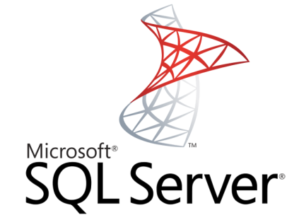

E-RESOURCES
-
Visual Studio Community 2017
DownloadMicrosoft Visual Studio is an integrated development environment from Microsoft. Free, fully-featured IDE for students, open-source and individual developers.
-

Microsoft SQL Server 2014 Express
DownloadMicrosoft SQL Server 2014 Express is a powerful and reliable free data management system that delivers a rich and reliable data store for lightweight Web Sites and desktop applications.
-

Visual Studio Code
DownloadVisual Studio Code is a lightweight but powerful source code editor which runs on your desktop and is available for Windows, macOS and Linux.
-

Eclipse
DownloadEclipse is an integrated development environment (IDE) used in computer programming, and is the most widely used Java IDE.